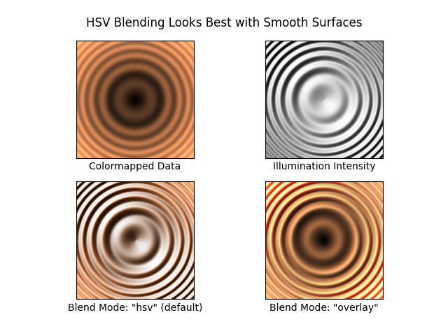
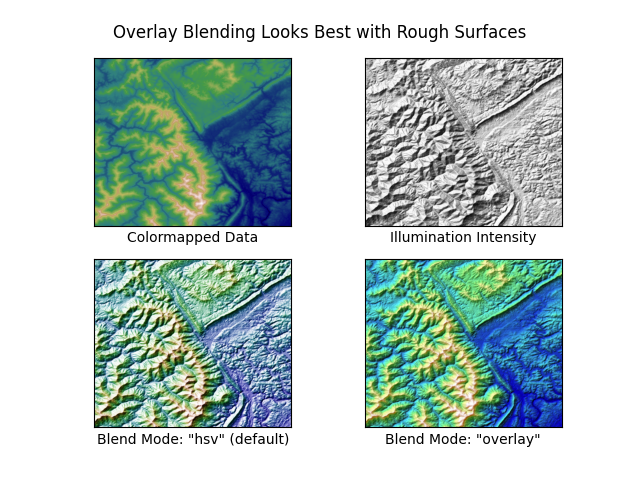

Note
Click here to download the full example code
Shading example¶
Example showing how to make shaded relief plots like Mathematica or Generic Mapping Tools.
import numpy as np
from matplotlib import cbook
import matplotlib.pyplot as plt
from matplotlib.colors import LightSource
def main():
# Test data
x, y = np.mgrid[-5:5:0.05, -5:5:0.05]
z = 5 * (np.sqrt(x**2 + y**2) + np.sin(x**2 + y**2))
dem = cbook.get_sample_data('jacksboro_fault_dem.npz', np_load=True)
elev = dem['elevation']
fig = compare(z, plt.cm.copper)
fig.suptitle('HSV Blending Looks Best with Smooth Surfaces', y=0.95)
fig = compare(elev, plt.cm.gist_earth, ve=0.05)
fig.suptitle('Overlay Blending Looks Best with Rough Surfaces', y=0.95)
plt.show()
def compare(z, cmap, ve=1):
# Create subplots and hide ticks
fig, axs = plt.subplots(ncols=2, nrows=2)
for ax in axs.flat:
ax.set(xticks=[], yticks=[])
# Illuminate the scene from the northwest
ls = LightSource(azdeg=315, altdeg=45)
axs[0, 0].imshow(z, cmap=cmap)
axs[0, 0].set(xlabel='Colormapped Data')
axs[0, 1].imshow(ls.hillshade(z, vert_exag=ve), cmap='gray')
axs[0, 1].set(xlabel='Illumination Intensity')
rgb = ls.shade(z, cmap=cmap, vert_exag=ve, blend_mode='hsv')
axs[1, 0].imshow(rgb)
axs[1, 0].set(xlabel='Blend Mode: "hsv" (default)')
rgb = ls.shade(z, cmap=cmap, vert_exag=ve, blend_mode='overlay')
axs[1, 1].imshow(rgb)
axs[1, 1].set(xlabel='Blend Mode: "overlay"')
return fig
if __name__ == '__main__':
main()
- 
- 
References¶
The use of the following functions, methods and classes is shown in this example:
import matplotlib
matplotlib.colors.LightSource
matplotlib.axes.Axes.imshow
matplotlib.pyplot.imshow
Out:
<function imshow at 0x7f6507ff4d30>
Total running time of the script: ( 0 minutes 1.127 seconds)
Keywords: matplotlib code example, codex, python plot, pyplot Gallery generated by Sphinx-Gallery